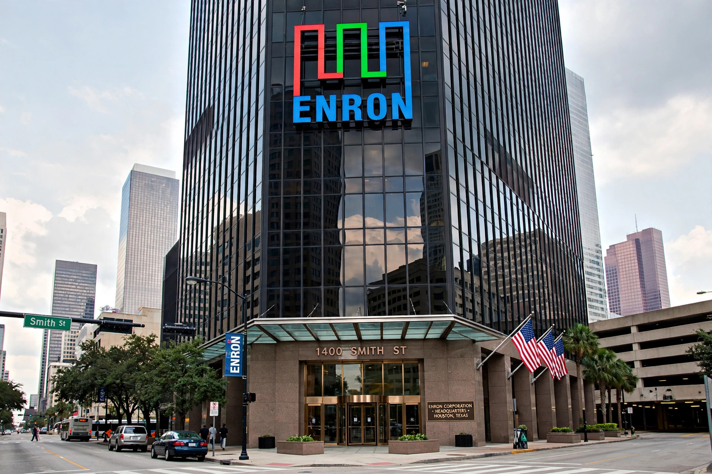

Enron scandal
From Wikipedia, the free encyclopedia
| Enron scandal | |
|---|---|
 | |
| Date | October–December 2001 |
| Type | Accounting fraud |
| Outcome | Enron bankruptcy (2 Dec 2001); dissolution of Arthur Andersen; Sarbanes–Oxley Act 2002 |
| Key figures | Kenneth Lay, Jeffrey Skilling, Andrew Fastow, Sherron Watkins |
The Enron scandal was an accounting scandal involving Enron Corporation, an American energy company based in Houston, Texas. When the scandal came to light in October 2001, Enron — then the seventh-largest company in the United States by reported revenue — collapsed, filing for bankruptcy on 2 December 2001 in what was at the time the largest corporate bankruptcy in American history. The scandal also led to the dissolution of Arthur Andersen, one of the world's five largest accounting firms, and prompted the passage of the Sarbanes–Oxley Act of 2002.
Background
Enron was formed in 1985 from a merger of natural gas pipeline companies and, under chairman Kenneth Lay and later CEO Jeffrey Skilling, transformed itself into a trader of energy and other commodities. Through the 1990s it was widely admired and repeatedly named "America's Most Innovative Company" by Fortune magazine. Its share price peaked at about $90 in August 2000.
The fraud
Investigations revealed that much of Enron's reported profit was the product of accounting practices that concealed debt and inflated earnings. Under CFO Andrew Fastow, Enron used special purpose entities (SPEs) — partnerships with names such as LJM and Chewco, and the "Raptors" — to keep hundreds of millions of dollars of debt off its balance sheet. Enron also used "mark-to-market" accounting on long-term contracts to book projected future profits as current income.
In August 2001, vice president Sherron Watkins sent an anonymous memo to Lay warning that the company might "implode in a wave of accounting scandals." In October 2001 Enron announced a $618 million quarterly loss and a $1.2 billion reduction in shareholder equity. The Securities and Exchange Commission opened an investigation; credit downgrades followed, a rescue merger with rival Dynegy collapsed, and Enron filed for Chapter 11 bankruptcy on 2 December 2001. Thousands of employees lost their jobs and retirement savings held in Enron stock.
Criminal proceedings
Arthur Andersen was convicted in June 2002 of obstruction of justice for destroying Enron-related documents (the conviction was overturned by the U.S. Supreme Court in 2005, but the firm had already ceased operating). Fastow pleaded guilty in 2004 and cooperated with prosecutors. In 2006 Skilling was convicted of fraud and conspiracy and sentenced to 24 years in prison (later reduced); Lay was convicted at the same trial but died before sentencing, and his conviction was vacated.
Aftermath
The scandal, along with the contemporaneous WorldCom scandal, led Congress to pass the Sarbanes–Oxley Act of 2002, which imposed stricter internal controls, executive certification of financial statements, and created the Public Company Accounting Oversight Board. The Enron scandal remains a leading case study in corporate crime and business ethics.
See also
- Corporate crime
- U.S. Securities and Exchange Commission
- Sarbanes–Oxley Act
This article is a recreation from memory in the style of Wikipedia.